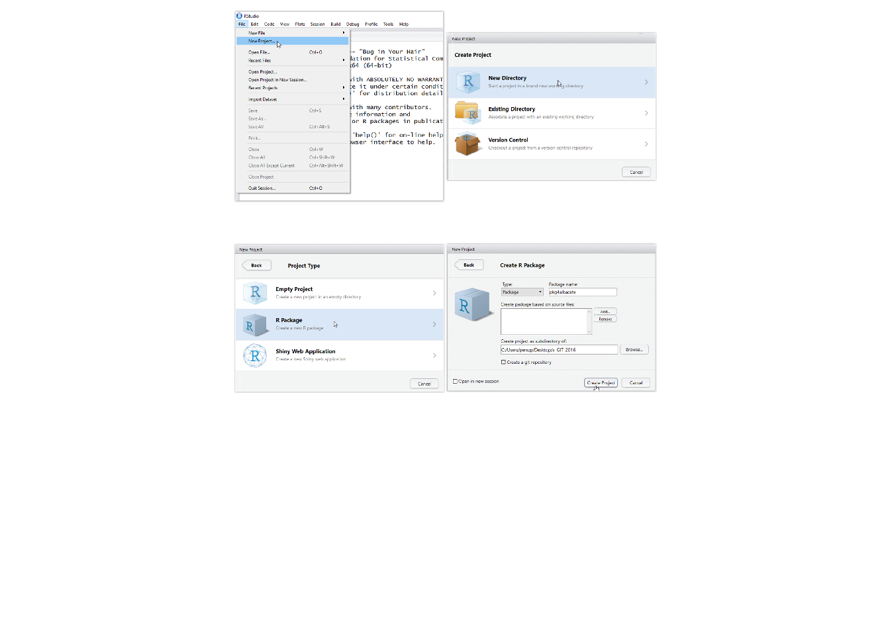

Proceso de creación del package
Pedro J. Pérez
8 de octubre de 2016
Dividiré el proceso de creación del package en 9 pasos.
Proceso de creación del pkg
Bueno, pues vamos allá: a hacer el package, le pondré el nombre pkg4albacete y muchas veces me referiré a él como “nuestro package”.
1er paso: recopilando los elementos que meteré en el package
Lógicamente, supondremos que ya tenemos los elementos que nutrirán el package. En nuestro caso 2 ficheros de datos en formato .rda, dos funciones (cada una en un fichero .R)
2o paso: Crear la estructura del package desde RStudio
La estructura del package la crearemos con RStudio, concretamente con la siguiente sucesión de menús/opciones en RStudio: File > New Project > New Directory > Package > package name que puedes ver en los gráficos de más abajo.
Figures: Creando un package (gestionado como un Rproject) a través de RStudio

Si has seguido esta ruta de menús/opciones se habrá abierto en RStudio un archivo de una función que te dice Hola, pero también (y más importante) se habrá creado en tu PC (donde tú hayas seleccionado) una nueva carpeta que contendrá la estructura de nuestro package pkg4albacete Ya he dicho que el nombre que he elegido para nuestro package es pkg4albacete. Podemos pensar que la carpeta donde está alojado pkg4albacete es ./pkg4albacete/
El contenido inicial de la carpeta pkg4albacete es el siguiente:

Vamos a ir modificando/añadiendo elementos a pkg4albacete;concretamente vamos a tener que modificar lo siguiente:
- el archivo
NAMESPACE
- el archivo
DESCRIPTION
- la carpeta
./pkg4albacete/R/
- la carpeta
./pkg4albacete/man/(esto lo harádevtools)
Después crearemos (también a través de devtools) las carpetas:
- la carpeta
./pkg4albacete/data/ - la carpeta
./pkg4albacete/man/
3er paso: Modificando el fichero DESCRIPTION
El fichero DESCRIPTION , tal y como nos lo ha creado RStudio tiene ésta estructura:
Package: pkg4albacete
Type: Package
Title: What the Package Does (Title Case)
Version: 0.1.0
Author: Who wrote it
Maintainer: The package maintainer <yourself@somewhere.net>
Description: More about what it does (maybe more than one line)
Use four spaces when indenting paragraphs within the Description.
License: What license is it under?
Encoding: UTF-8
LazyData: trueLo vamos a modificar usando un editor de texto a algo como:
Package: pkg4albacete
Type: Package
Date: 2016-10-10
Title: Package para el curso Econometría I de GECO
Version: 0.1.0
Author: Pedro J. Pérez <pjperez@uv.es>
Maintainer: Pedro J. Pérez <pjperez@uv.es>
Description: Este package se utiliza como apoyo docente al curso
de Econometría de la Licenciatura de GECO en la UV
Imports:
dplyr,
magrittr
License: GPL-3
Encoding: UTF-8
LazyData: trueSi os fijáis, hay varios cambios:
He puesto mi nombre y e-mail en
Author:yMaintainerHe añadido
Date:yLicense:En
Title:debe ir una sola linea con una breve descripción de qué hace el package. Cuidado!, no puede acabar con un puntoEn
Description:se puede poner una descripción más larga del package. Fíjate que si hay varias lineas, la segunda y siguientes lineas deben llevar una sangría de 4 espacios.
Como Description: only gives you a small amount of space to describe what your package does, I also recommend including a README.md file that goes into much more depth and shows a few examples. Ya lo haremos al subir el package a Github.
- He añadido
Imports:. Como tiene varias lineas, la segunda y siguiente tambien van con sangría de 4 espacios
El campo más complicado de entender es Imports:. Este campo da la lista de R packages que “nuestro package” necesita para poder funcionar (puede que no necesite ninguno). En nuestro caso, una de las funciones que vamos a meter en pkg4albacete necesita funciones de 2 packages: dplyr y magrittr, así que hay que “importarlos”, asegurarse de que están disponibles con Import:.
Si tu package necesita una versión específica de otro package hazlo así:
Imports:
ggplot2 (>= 0.2),
dplyr (>= 0.3.0.1)Otra forma de añadir el campo imports es usando el package devtools, concretamente con la instrucción devtools::use_package("pkg_name"). Esto modifica automáticamente el campo imports en el fichero DESCRIPTION. Por ejemplo
devtools::use_package("dplyr")
#> Adding dplyr to Imports
#> Refer to functions with dplyr::fun()4o paso: Metiendo nuestros 2 ficheros de datos en ./pkg4albacete/data/
Tenemos 2 ficheros de datos esp.rda y fra.rdaque queremos alojar en nuestro package. Los datos están en formato .rda y los podemos en este formato grabar así:
dir.create("./data") #- creamos el directorio
save(my_data, file="./data/esp.RData") #- guardamos my_data en formato .RData o .rdaPara documentar los 2 ficheros de datos puedes crear un sólo fichero llamado data.R y alojarlo en la carpeta ./pkg4albacete/R/. El archivo ha de ser algo como:
#' 13 PIACC variables for SPAIN
#'
#' PIACC data for SPAIN. PIACC es el acrónimo de
#' Programa para la Evaluación Internacional de las
#' Competencias de los adultos (PIAAC) de la OCDE.
#' Información detallada sobre el programa PIAAC puede encontrarse en su página web
#' (http://www.oecd.org/skills/piaac/)
#' The 13 variables here are as follows:
#'
#' @format A data frame with 1991 rows and 13 variables:
#' \itemize{
#' \item CNTRYID: Country ID (ISO 3166, numeric)
#' \item SEQID: Sequential ID (randomly derived)
#' \item GENDER_R: Person resolved gender from BQ and QC check (derived)
#' \item EARNHR: Hourly earnings excluding bonuses for wage and salary earners (derived)
#' \item EARNMTH: Monthly earnings excluding bonuses for wage and salary earners (derived)
#' \item D_Q16b: Current work - Earnings - Gross pay
#' \item EDCAT7: Highest level of formal education obtained (7 categories - derived)
#' \item YRSQUAL: Highest level of education obtained imputed into years of education (derived)
#' \item C_Q09_C: Current status/work history - Years of paid work during lifetime (top-coded at 47)
#' \item C_D05: Current status/work history - Employment status (DERIVED BY CAPI)
#' \item J_Q02a: Background - Living with spouse or partner
#' \item J_Q04a: Background - Born in country
#' \item PVNUM1: Numeracy scale score - Plausible value 1
#' }
"esp"
#'#' 13 PIACC variables for FRANCE
#'
#' PIACC data for FRANCE. PIACC es el acrónimo de
#' Programa para la Evaluación Internacional de las
#' Competencias de los adultos (PIAAC) de la OCDE.
#' Información detallada sobre el programa PIAAC puede encontrarse en su página web
#' (http://www.oecd.org/skills/piaac/)
#' The 13 variables here are as follows:
#'
#' @format A data frame with 3346 rows and 13 variables:
#' \itemize{
#' \item CNTRYID: Country ID (ISO 3166, numeric)
#' \item SEQID: Sequential ID (randomly derived)
#' \item GENDER_R: Person resolved gender from BQ and QC check (derived)
#' \item EARNHR: Hourly earnings excluding bonuses for wage and salary earners (derived)
#' \item EARNMTH: Monthly earnings excluding bonuses for wage and salary earners (derived)
#' \item D_Q16b: Current work - Earnings - Gross pay
#' \item EDCAT7: Highest level of formal education obtained (7 categories - derived)
#' \item YRSQUAL: Highest level of education obtained imputed into years of education (derived)
#' \item C_Q09_C: Current status/work history - Years of paid work during lifetime (top-coded at 47)
#' \item C_D05: Current status/work history - Employment status (DERIVED BY CAPI)
#' \item J_Q02a: Background - Living with spouse or partner
#' \item J_Q04a: Background - Born in country
#' \item PVNUM1: Numeracy scale score - Plausible value 1
#' }
"fra"Como ves hay un bloque de “Roxygen comments” (las lineas que empiezan con #') para cada fichero de datos (esp y fra). Es parecido a documentar las funciones (que veremos luego), sólo que al final has de incluir una linea con el nombre del fichero de datos como character string, en nuestro caso "esp" y "fra"
El fichero de documentación no tiene porque ser tan largo, bastaría con (incluso con menos):
#' 13 PIACC variables for SPAIN
#'
#' PIACC data for SPAIN. PIACC es el acrónimo de
"esp"
#'#' 13 PIACC variables for FRANCE
#'
#' PIACC data for FRANCE. PIACC es el acrónimo de
"fra"Nosotros creamos ese fichero ./pkg4albacete/R/data.R y más adelante haremos uso de devtools que es quien realmente pasará ese fichero a un formato parecido al latex.
Cuando pkg4albacete esté operativo y alguien se lo instale, podrá cargar y usar los datos que hemos cargado en el nuestro package con:
esp <- data(esp)Y se podrá ver la información que hemos proporcionado sobre los datos con ?esp
5o paso: Metiendo nuestras 2 funciones en ./pkg4albacete/R/
Tenemos 2 funciones que queremos alojar en nuestro package. Cada función la tenemos escrita en un fichero .R.
La primera función la tenemos en el fichero my_fun_1.R. Veámosla:
my_fun_1 <- function(df, print = FALSE) {
result <- df %>% summarise_each(. , funs(mean))
return(result)
}La función my_fun_1() tiene como argumento un data.frame y devuelve otro df con las medias de cada una de las columnas del df original. Para que my_fun_1() funcione necesita la función/operador %>% y la función summarise_each() que pertenecen a los packages magritt y dplyr respectivamente; por ello, para que my_fun_1() funcione necesita que “estén” magritt y dplyr, así que tendremos que “importarlos”.
La segunda función la tenemos en el fichero my_fun_2.R. Veámosla:
my_fun_2 <- function(x, y) {
result <- x + y
return(result)
}Esta segunda función es muy sencilla, metes dos números y te devuelve su suma. No necesita ninguna función, solo necesita + de R base. Para que funcione no necesitamos “importar” ningún package, porque siempre que abres RStudio se carga Rbase.
Tenemos que meter estos 2 ficheros en la carpeta ./pkg4albacete/R/. Veamos que hay ahora en ./pkg4albacete/R/:

Vemos que hay un archivo llamado hello.R. Es una función de ejemplo/recordatorio que nos ha creado automáticamente RStudio cuando iniciamos nuestro package con el único objetivo de recordarnos que las funciones de nuestro package deben alojarse en el directorio R. Esta función la podemos borrar o dejar, yo la dejaría, siempre es bueno tener a alguien que te diga hola, aunque sea una función (si la borras también hay que borrar el fichero hello.Rd que está en la carpeta donde se guarda la documentación de las funciones .(pkg4albacete/man/ “man” se supone que viene de “manuals”)
Así que podemos borrar el archivo ./pkg4albacete/R/hello.R , pero lo que SÍ tenemos que hacer es alojar en la carpeta ./pkg4albacete/R/ los 2 archivos que contienen nuestras funciones. Ahora nos tocará documentar nuestras funciones (no es estrictamente necesario pero …)
6o paso: Documentando nuestras 2 funciones en ./pkg4albacete/R/
Es el paso que más me costó entender. ¿Por qué? Pues porque la documentación se tiene que escribir en un formato especial.
Nosotros vamos a escribir la documentación de nuestras funciones con roxygen comments. Lo más llamativo de estos comments es que en lugar de comenzar con # empiezan con #' pero tienen muchas pejigueras. Veamos algunas:
Por ejemplo, para nuestra función más sencilla my_fun_2 si le añadimos roxygen comments (se ponen antes de la función) quedaría como:
#' Esta función suma 2 números
#'
#' @param x Un número
#' @param y Un número
#' @return La suma de \code{x} e \code{y}
#' @examples
#' my_fun_2(1, 1)
#' my_fun_2(10, 1)
#' @export
my_fun_2 <- function(x, y) {
result <- x + y
return(result)
}
Fíjate que @export hará que my_fun_2 se “exporte” y pueda ser usado por todo aquel que se instale nuestro package.
Fíjate que los parámetros x e y se referencian como \code{x} y \code{y}. Si quieres saber todo sobre cómo documentar tus funciones ve aquí
Una vez tenemos my_fun_2.R con sus roxygen comments al principio, tendremos que procesar este archivo con el package roxygen; concretamente si ejecutas en RStudio devtools::document() convertirá esos roxygen comments creando un nuevo archivo .Rd, en nuestro caso my_fun_2.Rd que estará alojado en pkg4albacete/man/. (Cuidado: has de ejecutar devtools::document() “desde” pkg4albacete)
Vamos a documentar my_fun_1:
#' Esta función coge un df y calcula la media de cada columna
#'
#' @param df Un data.fram
#' @return Un nuevo df con la media de cada columna del df original \code{df}
#' @examples
#' my_fun_1(mtcars)
#' @export
my_fun_1 <- function(df, print = FALSE) {
result <- df %>% summarise_each(. , funs(mean))
return(result)
}
7o paso: Modificando el fichero NAMESPACE
Bueno, pues ya casi está, falta modificar el fichero NAMESPACE. Este fichero controla que funciones se exportaran y que funciones de otros packages se importan.
Si has ejecutado devtools::document() para generar la documentación de las funciones, entonces devtools ya ha modificado el fichero NAMESPACE para que nuestras 2 funciones se “exporten”. devotools sabe que tiene que exportarlas porque se lo hemos dicho en la documentación de la función con @export; por lo tanto si has ejecutado devtools::document(), el fichero NAMESPACE ya incluirá algo como:
# Generated by roxygen2: do not edit by hand
export(my_fun_1)
export(my_fun_2)Si no hubieses ejecutado devtools::document() aún, el fichero NAMESPACE estará como nos lo creo RStudio:
exportPattern("^[[:alpha:]]+")Venga, hazlo ya, a documentar tus funciones!!. Incluye @export y ejecuta devtools::document() para que NAMESPACE se ocupe de “exportar” tus funciones
Ahora nos falta “IMPORTAR” las funciones que nuestro package necesita. En nuestro caso, recordad que my_fun_1 necesitaba %>% del package magrittr y summarize_all() de dplyr ; así que para que my_fun_1 corra hay que importarlas.
La “mejor” forma de hacerlo es:
Primero recordar que ya tenemos medio trabajo hecho porque en la DESCRIPTION file pusimos lo siguiente:
Imports:
dplyr,
magrittrEsto nos aseguraba que quien cargase pkg4albacete también tendría en su PC dplyr y magittr. Es como si hubiesen hecho install.packages(c("dplyr","magrittr")). ¿Qué nos falta? Pues library() …
Nos falta “hacer library()” para cargar los paquetes dplyr y magrittr. Para ello tenemos 2 posibilidades: hacerlo con :: o “importarlos explícitamente”. Hadley recomienda la primera forma, pero aquí(para hacerlo más sencillo lo haremos de la segunda)
- la primera forma (que es la que no vamos a utilizar): con
::
Tendríamos que escribir my_fun_1 de esta forma (no muestro los roxygen comments que hay en la parte superior de la función)
my_fun_1 <- function(df, print = FALSE) {
result <- df magrittr::%>% dplyr::summarise_each(. , funs(mean))
return(result)
}Es decir, llamas a las funciones con package::funcion que en nuestro caso es: magrittr::%>% y dplyr::summarise_each
- La segunda forma: “importando” explícitamente las funciones en
NAMESPACE. Esto se hace poniendo dos nuevas lineas en nuestro archivoNAMESPACE, PERO mejor que lo hagadevtoolspor nosotros; así que aunque nuestro objetivo es modificarNAMESPACElo que haremos es modificar nuestras funciones y luego llamar a devtools. Bueno, en nuestro caso solo nos hace falta modificar my_fun_1 que necesita 2 funciones de otros packages, porque my_fun_2 no necesita de otros packages.
Modificaremos my_fun_1 para que quede como:
#' Esta función coge un df y calcula la media de cada columna
#'
#' @param df Un data.fram
#' @return Un nuevo df con la media de cada columna del df original \code{df}
#' @examples
#' my_fun_1(mtcars)
#' @export
#' @import dplyr
#' @importFrom magrittr %>%
my_fun_1 <- function(df, print = FALSE) {
result <- df %>% summarise_each(. , funs(mean))
return(result)
}Fíjate que le he añadido 2 lineas que empiezan por @importFrom y @import. Al final he decidido importar todo dplyr
Una vez hemos incluido en nuestras funciones lo que necesitamos importar sólo queda que devtools haga el trabajo sucio. ¿Cómo? pues otra vez con devtools::document(). Si ejecutamos esta instrucción, nuestro NAMESPACE quedará como:
# Generated by roxygen2: do not edit by hand
export(my_fun_1)
export(my_fun_2)
import(dplyr)
importFrom(magrittr,"%>%")8o paso: Creando una vignette
No hace falta crear una vignette, pero creo que es útil que si el package es para una asignatura, los estudiantes tengan a mano los scripts/materiales que se usan para solucionar/documentar algunas prácticas.
Las “vignettes” se pueden construir de varias maneras pero lo más fácil es que la estructura nos la cree devtools y luego nosotros ya añadiremos el contenido que queramos (lo escribiremos en formato Rmarkdow). Escribir en Rmarkdown es muy fácil pero necesita del package knitr y del programa pandoc. Afortunadamente cómo estamos creando pkg4albacete con RStudio ya los tenemos instalados.
Para crear una vignette con devtools sólo hay que ejecutar devtools::use_vignette("my-vignette"). Con esta instrucción devtools habrá creado la carpeta ./pkg4albacete/vignettes y dentro el archivo my-vignette.Rmd
Fíjate que la extensión del archivo es Rmarkdown .Rmd . Cuando alguien cargue pkg4albacete podrá ver las viñetas de pkg4albacete (de momento sólo hay una) con la instrucción browseVignettes("pkg4albacete"). Si queremos mostrar una viñeta concreta, lo podemos hacer con vignette(my-vignette). Si queremos ver el código de la viñeta lo podemos hacer con edit(vignette(my-vignette))
Lógicamente tendremos que modificar (escribiendo en formato Rmarkdow) my-vignette para que muestre lo que queramos explicar en clase, vamos los contenidos/ejercicios/scripts del curso. Esto es tarea vuestra.
IMPORTANTE: Una vez hayamos puesto en nuestra viñeta todo lo que queramos contar, falta “construirla” con la instrucción devtools::build_vignettes()
9o paso: Construyendo (Building) pkg4albacete
Bueno, para mí el package ya esta construido: tengo dentro de la carpeta todo lo que necesito (funciones, documentación, datos, …) pero realmente, aún no es un package operativo, sólo es un carpeta con una estructura concreta y ficheros. Falta “construirlo”, pero eso es lo que hace siempre por nosotros install.packages().
En realidad es un poco más complicado …
it really helps to understand the five states a package can be in across its lifecycle: source, bundled, binary, installed and in-memory. (Hadley)
De momento podemos pensar que pkg4albacete está en estado “source”:
A source package is just a directory with components like R/, DESCRIPTION, and so on. (Hadley)
Y lo podemos hacer operativo con install.packages() pero como no está en CRAN, ni en Github (todavía), hay que cargarlo desde LOCAL con:
install.packages("C:/Users/perezp/Desktop/a_GIT_2016/pkg4albacete", repos = NULL, type="source")
library(pkg4albacete)Fíjate que has de poner la ruta de pkg4albacete en tu ordenador.
Espero que te haya funcionado. Si ha sido así, ya tienes cargado pkg4albacete y puedes usarlo, por ejemplo:
my_fun_2(4,6) #- usamos my_fun_2() para sumar 2 números
my_fun_1(mtcars) #- usamos my_fun_1() para calcular las medias de las columnas de mtcars
my_fun_1(esp) #- usamos my_fun_1() para calcular las medias de las variables de esp
?esp #- obtenemos información sobre el df esp
?my_fun_2 #- obtenemos información sobre el df esp
browseVignettes("pkg4albacete")
vignette("my-vignette") #- vemos la vignette "my-vignette"